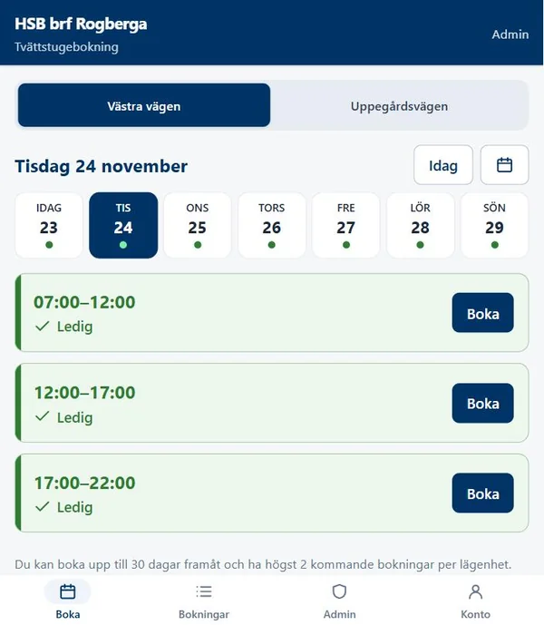
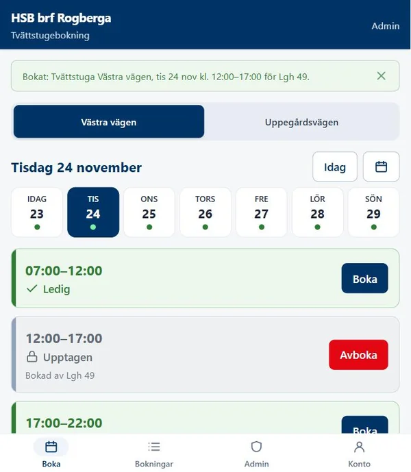
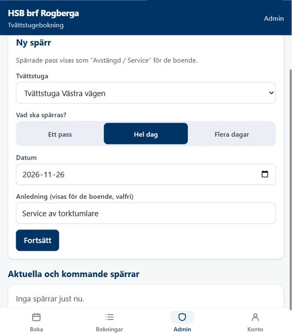
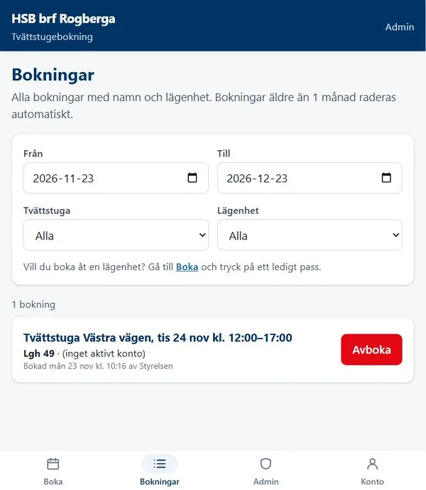

Projekt · Bokning
Tvättstugebokning
En bokningsapp för tvättstugorna i HSB brf Rogberga i Tenhult. De boende bokar tvättid i mobilen, och styrelsen sköter konton, avbokningar och avstängningar för service på samma ställe.




Bakgrund
Tidigare bokade vi tvättid med tvättbrickor i en tavla, och det fungerade sådär. Nycklar till brickorna försvann, tavlorna rensades inte efter passerade tider, och det fanns fler brickor än platser i parkeringsläget. Brickor fick därför sitta kvar på tider som redan varit. Till slut kändes det som att det var dags att göra något åt det.
Lösningen behövde vara så enkel att alla i föreningen kan använda den, oavsett ålder och vana vid mobilen. Därför börjar allt med en QR-kod. Man riktar mobilkameran mot koden och kommer direkt till bokningen. QR-koden sitter uppe i trapphusen och på dörren till tvättstugan. Den finns också på ett infoblad med regler och instruktioner, som delas ut till alla boende och till nyinflyttade.
Appen är byggd för mobilen i första hand men fungerar lika bra i datorns webbläsare. Det finns ingen app att ladda ner från en appbutik. I stället kan man lägga den på hemskärmen via mobilens webbläsare, och då öppnas den som en vanlig app.
Nu ser alla direkt vilka tider som är lediga utan att behöva springa ner i källaren, och ingen behöver leta efter sina nycklar. Passerade tider försvinner av sig själva, och avbokning går ända fram till att passet börjar. Om en maskin behöver service kan styrelsen stänga av tvättstugan, och då ser de boende varför tiden inte går att boka.
Vad den gör
För de boende
- Logga in med e-post och eget lösenord
- Se lediga pass i båda tvättstugorna
- Boka och avboka, högst två bokningar åt gången
- Se sina bokningar och få besked om styrelsen avbokat
För styrelsen
- Bjuda in boende och sköta konton
- Se alla bokningar med lägenhet
- Boka och avboka åt en lägenhet
- Stänga av pass, dagar eller perioder för service
Så är den byggd
- Mobilen först: byggd för små skärmar, med tydliga färger för lediga och upptagna pass.
- Reglerna sitter i databasen: antal bokningar, tider och vem som får se vad kontrolleras av databasen, inte bara av appen.
- Data i Sverige: inloggning och databas hos Supabase i Stockholm.
- Teknik: React och TypeScript, publicerad på Cloudflare.
Vill din förening ha något liknande?
Prova demon och boka en tvättid själv, som boende eller som styrelse. Hör gärna av dig om du vill veta mer om hur det fungerar.
Demon delas av alla besökare och återställs varje natt. Det du ser kan alltså ha ändrats av någon annan. Vill du börja om från början kan du använda återställningsknappen i demon.